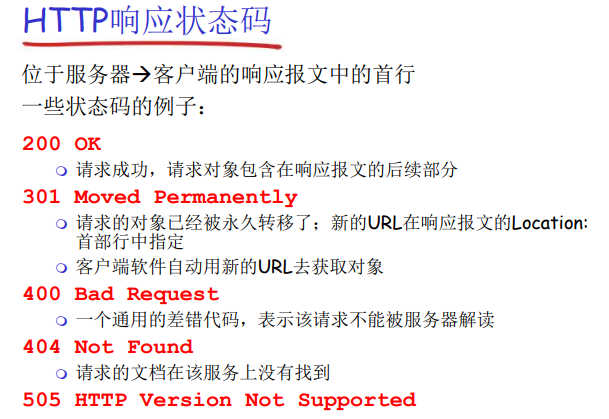

《计算机网络》复习笔记
计算机网络概述
计算机网络:简称网络，由若干节点(node，计算机、集线器、交换机、路由器)和连接这些节点的链路(link)组成
互联网：网络间通过路由器连接起来，组成覆盖范围更大 的计算机网络，也称为“网络的网络 network of networks ”
因特网：特指当前全球最大的、开放的、由众多网络相互 连接而成的互联网，采用TCP/IP协议族作为通信规则，前身是美国的APARNET
两种描述“因特网”的方式：
- 描述构成因特网的具体构成，基本硬件和软件组件；
- 描述为基础设施向分布式应用程序提供的服务。
具体构成
计算设备统称为 主机(端系统) 如:传统的桌面PC、 工作站、 服务器 • 非传统的因特网设备如便携机、智 能手机、平板电脑、电视、游戏机、 温度调节装置、家用电器、手表、眼 镜、汽车、运输控制系统.
通信链路
有多种不同类型的物理媒体： Fiber光纤, copper同轴电缆, radio 无线电频谱, satellite卫星
衡量链路性能的指标:
- 传输速率 transmission rate: 比特/秒、bit/s、bps
- 带宽 bandwidth
分组交换机
分组 packet： 当一台端系统向另 一台端系统发送数据时，发送端系统将数据分段，每段加上首部 字节。
路径 path 或 route：一个分组所经历的一系列通信链路和分组交换机。
两种最主要类型的分组交换机
- 路由器 routers，用于核心网；
- 链路层交换机 switches，用于 接入网
因特网服务提供商 ISP
- 住宅区ISP、公司ISP、大学ISP、 WiFi ISP、蜂窝数据ISP
- 提供不同种类的网络接入，住宅宽带接入DSL、高速局域网接入、 移动无线接入
- 较高层ISP通过高速光纤链路和高速路由器组成；
- 较低层ISP通过国家的、国际的较 高层ISP互联到因特网
- 无论高层还是低层ISP都独立管理
协议protocols
在网络上控制信息的发送 接收
e.g. TCP, IP, HTTP, Skype, 802.1
服务描述
从为应用程序提供服务的基础设施的角度描述因特网。
套接字接口 socket interface
一 套发送程序必须遵循的规则集合， 规定了运行在一个端系统上的应用程序请求因特网基础设施向 行在另一个端系统上的特定目的程序交付数据的方式
网络协议 network protocols
协议定义了在两个或多个通信实体之间交换的报文格式和顺序，以及报文发送和/或 接收及其他事件所采取的动作
- 通信双方交换报文，而不是语句
- 通信实体是设备
网络结构
网络结构可以分为:
- 网络边缘:主机/端系统,应用程序
- 接入网络:有线或者无线通信链路
- 网络核心:互连着的路由器 , 网络的网络
接入网络
接入网 Access networks：将端系统物理连接到其边缘路由器的网络。
边缘路由器:是端系统到任何远程端系统的路径上的第一台路由器
怎样将端系统和边缘路由器连接？
- 住宅接入网络
- 单位接入网络 （学校、公 司）
- 无线接入网络
家庭接入网
宽带住宅接入有两种流行方式：数字用户线 DSL和电缆。
数字用户线 DSL:双绞线
电缆:
- 由于外层屏蔽层 的作用，具有很 好的抗干扰性， 适于高速率传输
- 利用现有的有线电视基础设施
光纤入户:
其他方式:
- 卫星接入光纤到户:超过1Mbps的速率接入。
- 传统电话线的拨号接入： 与DSL类似，56Kbps的速率
企业接入网
使用局域网LAN将多个端接系统连接到边缘路由器，用户设备 位于几十米范围内
多使用基于IEEE802.11技术的无线LAN接入，也称Wifi
企业网接入方式广泛应用于家庭，设备价格低廉
广域无线接入网
Iphone、安卓等智能手机使用蜂窝网络的无线基础设施（基 站）来接入因特网，发送和接收分组。
物理媒介
physical medium 物理媒体：通过传播电信号或光脉冲来发送bit
guided media 引导型媒体: signals propagate in solid media: copper, fiber, coax
unguided media 非引导型媒体: signals propagate freely, e.g. radio
物理链路的实际成本与组网的其它成本相比是比较小的,特别是安装物理链路的劳动力成本
双绞线:
- 两根绝缘的铜线以规则的螺旋状绞合起来，为减少临近类似 的双绞线的电气干扰
- 大多数情况下，使用无屏蔽双绞线 UTP，广泛用于计算机网 络局域网组网中，灵活易布线，性价比高
同轴电缆
- 由于外层屏蔽层的作用，具有很好的抗干扰性，适于高速 率传输
光纤
光脉冲
- 高传输速率
- 长距离传输，100km，光缆信号衰减极低，很难窃听
- 低误码率,不受电磁干扰
- 这些特性使其适用于长途引导型媒体，特别是跨海链路。
无线电信道
优点：穿墙、长距离、移动 连接 缺点：性能依赖于传播环境 和传播距离
网络核心
因特网核心是由分组交换机和链路构成的网状网络。
端系统彼此间想要交换的是报 文(message)，包含控制信息和 数据，但其长度往往超出因特 网转发的长度限制。
数据怎样通过网络进行传输？
- 电路交换：为每个呼叫预留一条 专有电路：如电话网
- 分组交换：将要传送的数据分成一个个单位(分组)
- 将分组从一个路由器传到相邻路由器（hop），一段段最终从源端传到目标端
- 每段：采用链路的最大传输能力（ 带宽 )
分组交换
- 以分组为单位存储-转发方式
- 存储转发传输(store-and-forward transmission): 是指在分组交换机能够开始向输出链路传输该分组的第一个比特之前，必须 接收到整个分组
- $\text {packet transmission delay} =\frac{L}{R} $,L是分组长度,R是传输速率
通过由N条速率均为R的链路组成的路径（源和目的端之间有N-1台路由器），从源到目的地发送一个分组， 端到端的时延是$N \cdot \frac{L}{R} $
P个分组经过N条链路序列的端到端时延:
排队时延
每台分组交换机有多条链路与之相连，对于每条链路分组交 换机设置一个输出缓存output buffer，也称为输出队列
排队时延取决于队列长度，即网络的拥塞程度.
缓存空间大小有限，当分组到达时缓存已满，将出现分组丢 失(即丢包)packet loss的现象:或丢弃新到达的分组, 或丢弃队列中已排队的分组(通常是优先级低)
电路交换
在端系统间通信过程中，创 建电路时就预留了端系统间沿路径通信所需要的全部资 源(缓存、链路传输速率)，并会话期间独占这些资源
分组交换网中资源不是预留的，会话期间需要的资源可 能需要等待
电路交换分配专用链路的两种方式: 频分复用和时分复用
频分复用(FDM):链路的频谱由跨该链路的所有连接共享，为每条经过的电路分配一个划分的子频段
频段的宽度称为带宽 bandwidth

时分复用（TDM）: 通信时间被划分为固定期间的帧，每个帧又被划分为固定数量的时隙，网络中 建立电路时在各段链路上的每个通信周期(时域)指定一个专用时隙，该时隙用于传输该电路连接的数据。

TDM中电路的传输速率等于帧速率乘以一个时隙的比特数.
- 例如，链路每秒传8000帧，每个时隙有8比特，则每条电路的传输速率为64Kbps
电路交换缺点:
- 电路交换因为在静默期（slient period）专用电路空闲导致浪费。
- 创建端到端的电路和预留资源是复杂的，需要复杂的信令和协 调沿路径的交换机操作。 （RSVP资源预留协议

分组交换 vs. 电路交换
-
分组交换网不适合实时服务(如电话和视频会议)，因为排队时 延导致端到端时延可变、不可预测。
-
分组交换网提供了比电路交换好的带宽共享,比电路交换更简单、 更有效、实现成本低
-
分组交换网适合于对突发式数据传输 :资源共享 , 简单，不必建立呼叫 但是过度使用会造成网络拥塞：分组延时和丢失,对可靠地数据传输需要协议来约束：拥塞控制
互联网络结构
松散的层次模型
中心：第一层ISP,国家/国际覆盖，速率极高 直接与其他第一层ISP相连 与大量的第二层ISP和其他客户网络相连
第二层ISP: 更小些的 (通常是区域性的) ISP 与一个或多个第一层ISPs，也可能与其他第二层ISP
第三层ISP与其他本地ISP 接入网 (与端系统最近)
ISP之间的连接
- 存在点PoP（Point of Presence）：存在于除底层（接入ISP）外的所有层次，是提供商网络中的一个或若干个路由器群组，客户网络通过提供商的租用高速链路将它的路由器之一连接到PoP的路由器之一。
- 多宿（multi-home）：除第一层ISP外，任何ISP可以与两个或多 个提供商ISP连接。 当一个ISP多宿时，若提供商ISP之一故障时，仍能传输分组。
- 客户ISP根据与提供商ISP交换的通信流量来付费。
- 对等：位于相同等级结构层次的临近一对ISP可以直接连接在 一起，它们之间的所有直接相互流量，不通过上游ISP转输， 彼此间互不付费。
- 因特网交换点（Internet Exchange Point，IXP）:是一个汇合点， 多个ISP能够在这里一起对等，通常位于独立建筑物内。

分组延时、丢失和吞吐量
产生时延和分组丢失的原因:
- 分组到达链路的速率超过了链路输出的能力
- 分组等待排到队头被传输
最大吞吐量:一台路由器能够转发分组的最大速率。
时延构成
时延类型

- 节点处理时延：
- 检查 bit级差错
- 检查分组首部和决定将分组导向何处
- 传输时延 ：将分组所有比特发射到链路上所需的时间
- 是链路带宽(bps) 是分组长度(bits) ，将分组发送到链路上的时间为
- 存储转发延时
- 传播时延： 每个比特从链路起点到下一 路由器传播所需要的时间
- = 物理链路的长度, $ s$ = 在媒体上的传播速度 () 传播延时 =
- 链路的传播速率取决于链路的物理媒体 （ 光纤、双绞线） ，略小于光速。
- 排队时延：在输出链路上等待传输的时间
- 依赖于路由器的拥塞程度
节点时延
- = 处理延时
- 通常是微秒数量级或更少
- = 排队延时
- 取决于拥塞程度
- $ d_{trans}$ = 传输延时
- = , 对低速率的链路而言很大（如拨号），通常为微秒级 到毫秒级
- $ d_{prop} $= 传播延时
- 几微秒到几百毫秒
排队时延和丢包
- 节点时延的构成成分中，最复杂的是排队时延
- 与其它3种时延不同的是，排队时延对每个分组可能是不 同的，即每个分组需要的排队时间不同
- 表征排队时延时，通常使用统计量，如:
- 平均排队时延、排队时延的方差、排队时延超过某特定值的概率
- 排队时延的大小取决于：
- 流量到达队列的速度、链路的传输速率、到达流量的性质（周期性的、突发的）

丢包
- 通常路由器内的队列容量是有限的，不能容纳所有到达的分组排队。
- 队列容量取决于路由器的设计和成本。
- 因此：
- 随着流量强度接近于1，排队时延并不是真的趋于无穷大,只是量级发生了变化；
- 队列满了的时候，路由器将丢弃（drop）到达的分组或优先级低的分组，此时将产生丢包（lost）。
- 分组的丢失比例随着流量强度增加而增加。
- 丢失的分组可能由前一个节点重传，或基于端到端的重传 原则重传
端到端时延

吞吐量
端到端单位时间内传输的数据量
吞吐量是衡量计算机网络性能的另一个重要指标。
瓶颈链路:端到端路径上，限制端到端吞吐的链路


协议层次
- 服务( Service)：低层实体向上层实体提供它们之间的通信的能力
- 服务用户(service user)
- 服务提供者(service provider )
- 原语(primitive)：上层使用下层服务的形式，高层使用低层提供的服务，以及低层向高层提供服务都是通过服务访问原语来进行交互的—形式
- 服务访问点 SAP (Services Access Point) ：上层使用下层提供的服务通过层间的接口—地点
- 例子:邮箱
- 地址(address)：下层的一个实体支撑着上层的多个实体， SAP有标志不同上层实体的作用
- 可以有不同的实现，队列
- 例子:传输层的SAP: 端口(port)
服务与协议的区别 :
- 服务(Service)：低层实体向上层实体提供它们之间的通信的能力，是通过原语(primitive)来操作的，垂直
- 协议(protocol) ：对等层实体(peer entity)之间在相互通信的过程中，需要遵循的规则的集合，水平
服务与协议的联系 :
- 本层协议的实现要靠下层提供的服务来实现
- 本层实体通过协议为上层提供更高级的服务
分层的体系结构
- 网络设计者以分层的方式组织协议，以及实现协议的网络硬件和软件:
- 每一层向它的上一层提供服务（service）。
- 每层通过执行该层的某些动作或直接使用下层服务来提供服务。
- 一个协议层能够使用软件、硬件或两者的结合来实现。
- 应用层协议几乎用软件实现；
- 物理层、数据链路层协议通常在网络接口卡(硬件)实现;
- 网络层协议通常由软、硬件混合实现.
- 第n层协议分布在网络的端系统、分组交换机和其它组件
分层的原因:
- 结构化分层易于定义和实现
- 模块化,易于维护和升级
分层的潜在缺点：
- 功能可能在多层冗余，如差错检验；
- 某层功能可能调用其它层提供的信息，分层不彻底.
Internet 协议栈
协议栈：各层所有协议的集合

| 协议 | 任务 | 信息单位 | |
|---|---|---|---|
| 应用层 | HTTP SMTP FTP DNS | 端系统之间 | 报文 |
| 传输层 | TCP UDP | 应用程序端点之间传送应用层报文 | 报文段 |
| 网络层 | IP 路由选择协议 | 主机之间 | 数据报 |
| 链路层 | 链路层协议 DOCSIS PPP | 整个帧从一个节点到下一个节点 | 帧 |
| 物理层 | 与实际传输媒体相关 | 一个个比特从一个节点到下一个节点 | 比特 |
ISO/OSI
TCP/IP协议栈中,将表示层放入了应用层,session放进了传输层
应用层
网络核心中没有应用层软件,网络核心没有应用层功能,网络应用只在端系统上存在
应用层协议原理
网络应用体系结构
- 从应用程序开发者的角度看，网络体系结构是固定的 ，并为应用程序提供了特定的服务集合。
- 应用程序体系结构由应用程序研发者设计，规定了如 何在端系统上组织该应用程序
当前主流的两种:
- 客户-服务器体系结构
- **对等(P2P)**体系结构
客户-服务器体系结构
服务器: 服务于来自许多其他称为客户的主机的请求。
- 一直运行
- 固定的IP地址和周知的端口号（约定）
- 扩展性：服务器场
- 数据中心进行扩展
- 扩展性差
客户端:
- 主动与服务器通信
- 与互联网有间歇性的连接
- 可能是动态IP 地址
- 不直接与其它客户端通信
例如:Web FTP 电子邮件
P2P结构
- （几乎）没有一直运行的服务 器
- 任意端系统之间可以进行通信
- 每一个节点既是客户端又是服 务器
- 自扩展性-新peer节点带来新的服务能力，当然也带来新的服务请求
- 参与的主机间歇性连接且可以改变IP地址
- 难以管理
- 面临安全性、性能、可靠性挑 战
例子: Gnutella，迅雷
适用于流量密集型应用,如文件共享,下载,视频会议
进程通信
在构建网络应用程序前，还需要对运行在多个端系统上的程序是如何互相通信的情况有一个基本了解。
进行通信的实际上是**进程(process)**而不是程序。
- 在同一个主机内，使用 进程间通信机制 通信（ 操作系统定义）
- 在两个不同端系统上的进程，通过跨越计算机网络交换报文（message）而相互通信。
[客户和服务器进程]
对每对通信进程, 我们通常将这两个进程之一标识为客户（client）,而另一个进程标识为服务器（serve)。
在一对进程之间的通信会话场景中，发起通信（即在该会话开始时发起与其他进程的联系）的进程被标识为客户，在会话开始时等待联系的进程是服务器。
对于Web而言，浏览器是一个客户进程，Web服务器是一台服务器进程。对于P2P文件 共享，下载文件的对等方标识为客户，上载文件的对等方标识为服务器。
一个进程可能既是客户又是服务器
[套接字]
进程通过一个称为套接字（socket）的软件接口向网络发送报文和从网络接收报文。
套接字，是同一台主机内应用层与传输层之间的接口 ，也称为应用程序和网络之间的应用程序编程接口API。
应用程序开发者可以控制套接字在应用层端的一切， 对于套接字在传输层端的控制仅限于：
- 选择传输层协议；
- 设定几个传输层参数，如最大缓存和最大报文⻓度等
进程寻址
在一台主机上运行的进程为了向在另一台主机上运行的进程发送分组，接收进程需要有一个地址。为了标识该接收进程，需要定义两种信息：
- 主机的地址,主机由其**IP地址(IP address)**标识
- 在目的主机中指定接收进程的标识符:端口号
一个进程：用IP+port标示
本质上，一对主机进程之间的通信由2个端节点构成
可供应用程序使用的运输服务
当开发一个应用时，必须选择一种可用的运输层协议
通过研究这些可用的 运输层协议所提供的服务，选择一个最能为你的应用需求提供恰当服务的协议。
大体能够从四个方面对应用程序服务要求进行分类：可靠数据传输(正确,不丢失)、吞吐量、定时和安全性。

因特网提供的运输服务
因特网为应用程序提供 两个运输层协议，即UDP和TCP。当你（作为一个软件开发者）为因特网创建一个新的应用时，首先要做出的决定是，选择UDP还是选择TCP
TCP服务:
- 面向连接服务
- 可靠数据传输服务:无差错 按序 无丢失 无冗余
- 拥塞控制机制
- 流量控制
- 但是不提供加密
UDP服务:UDP是一种不提供不必要服务的轻量级运输协议，它仅提供最小服务
- 不可靠数据传输
- 无连接服务
- 不提供可靠性 流量控制拥塞控制 定时 吞吐量保证 安全性


- 因特网能够为时延敏感的应用提供满意的服务，但是并不提供任何定时或带宽的保证
- 因特网电话等容丢失应用喜欢UDP，但是防火墙经常配置成阻挡UDP流量，所以用TCP做备份
应用层协议
应用层协议（application-layer protocol）定义了运行在不同端系统上的应用程序进程如何相互传递报文。特别是应用层协议定义了 ：
- 交换的报文类型，例如请求报文和响应报文。
- 各种报文类型的语法，如报文中的各个字段及这些字段是如何描述的。
- 字段的语义，即这些字段中的信息的含义。
- 确定一个进程何时以及如何发送报文，对报文进行响应的规则
可以分为:
- 公域协议
- 专用协议
Web和HTTP
Web的基本介绍
Web使用了客户 -服务器应用程序体系结构
HTTP
Web的应用层协议是超文本传输协议（HyperText Transfer Protocol, HTTP）,它是Web 的核心
HTTP由两个程序实现：一个客户程序和一个服务器程序。客户程序和服务器程序运行在不同的端系统中，通过交换 HTTP报文进行会话。
Web 浏览器（Web browser）实现 了 HTTP 的客 户端,Web服 务器（Web server）实现了 HTTP的服务器端，它用于存储Web对象，每个对象由URL寻 址。
- HTTP使用TCP:
- 客户发起一个与服务器的 TCP连接 (建立套接字) ， 端口号为 80
- 服务器接受客户的TCP连接
- 在浏览器(HTTP客户端) 与 Web服务器(HTTP服 务器 server)交换HTTP报文 (应用层协议报文)
- TCP连接关闭
- HTTP是无状态的,服务器并不维护关于客户的任何信息
HTTP连接类型
[往返时间]
该时间是指一个短分组从客户到服务器然后再返回客户所花费的时间。RTT包括分组传播时延、分组在中间路由器和交换机上的排队时延以及分组处理时延
-
非持续连接
- 最多只有一个对象在 TCP连接上发送
- 下载多个对象需要多个TCP连接
- HTTP/1.0使用非持 久连接

-
持续连接
- 多个对象可以在一个 （在客户端和服务器之间的）TCP连接上传输
- HTTP/1.1 默认使用 持续连接
HTTP在默认方式下使用持续连接，如果需要也可以配置为非持续连接。

HTTP报文格式
- 请求报文
- 响应报文
[HTTP请求报文]
ASCII文本书写 人类可读的格式

例如:
1 | GET /index.html HTTP/1.1\r\n |
提交表单输入的方式:
POST:包含在实体主体 (entity body )中的 输入被提交到服务器
URL:使用GET方法,输入通过请求行的 URL字段上载
Method 类型:
HTTP/1.0:
- GET:表单数据添加在URL 末尾
- POST:表单数据放在实体 字段中
- HEAD:只发送响应报文，而 不返回请求对象，用 于应用程序的调试 追踪。
HTTP/1.1:
- GET
- POST
- HEAD
- PUT:将实体主体中的文件上载到URL字段规定的路径
- DELETE:删除URL字段规定的文件
[HTTP响应报文]

1 | HTTP/1.1 200 OK\r\n |

用户-服务器状态：cookies
HTTP是无状态的，但是很多应用中服务器希望识别用户身份进一步提供服务。
[组成]
- 在HTTP响应报文中有 一个cookie的首部行
- 在HTTP请求报文含有 一个cookie的首部行
- 在用户端系统中保留有 一个cookie文件，由用户的浏览器管理
- 在Web站点有一个后端数据库
Web缓存(代理服务器)
Web缓存的存储空间中保存最近请求过的对象的副本,不访问原始服务器，就满足客户的请求
为什么要使用Web缓存 ？
- 降低客户端的请求响应时间
- 可以大大减少一个机构内部网络与Internent接入链路上的流量
- 互联网大量采用了缓存： 可以使较弱的ICP也能够 有效提供内容
条件GET方法
如果缓存器中的对象拷贝是最新的，就不要发送对象(由缓存器通过发送一个条件GET执行最新检查)

电子邮件
主要组成部分：用户代理（user agent）、邮件服务器（mail server）和简单邮件传输协议（Simple Mail Transfer Protocol, SMTP）

邮件服务器:邮件服务器形成了电子邮件体系结构的核心
- 邮箱中管理和维护发送给用户的邮件
- 输出报文队列保持待发送邮件报文
邮件服务器之间的SMTP协议 ：发送email报文
- 客户：发送方邮件服务器
- 服务器：接收端邮件服务器
SMTP是因特网电子邮件中主要的应用层协议。它使用TCP可靠数据传输服务
SMTP简单邮件传输协议
- 使用TCP在客户端和服务器之间传送报文，端口号为25
- 直接传输：从发送方服务器到接收方服务器(无论多远都是直接传输,SMTP 一般不使用中间邮件服务器发送邮件，即使这两个 邮件服务器位于地球的两端也是这样。邮件并不在中间的某个邮件服务器存留。)
- 传输的3个阶段
- 握手
- 传输报文
- 关闭
- 命令/响应交互
- 命令：ASCII文本
- 响应：状态码和状态信息
- 报文必须为7位ASCII码
- SMTP使用持久连接
vs. HTTP
- HTTP：拉（pull）
- SMTP：推（push）
- 二者都是ASCII形式的命令/ 响应交互、状态码
- HTTP：每个对象封装在各自的响应报文中
- SMTP：多个对象包含在一个报文中
邮件报文格式
邮件访问协议
从服务器访问邮件
典型的用 户通常在本地PC上运行一个用户代理程序，而它访问存储在总是保持开机的共享邮 件服务器上的邮箱。该邮件服务器与其他用户共享，并且通常由用户的ISP进行维护 （如大学或公司）。
- POP:邮局访问协议
- 用户身份确认 (代理<–>服务器) 并下载
- IMAP :Internet邮件访问协议
- 更多特性 (更复杂)
- 在服务器上处理存储的报文
- HTTP:
- 方便
[POP协议]
POP3按照三个阶段进行工作：特许（authorization）、事务处理以及更新

上述过程中的dele是标记删除,只有执行quit退出后才会真正删除
DNS:域名系统
识别主机有两种方式，通过主机名或者IP地址,我们需要一种能进行主机名到IP地址转换的目录服务,即域名系统
DNS是：
- 一个由分层的DNS服务器（DNS server）实现的分布式数据库；
- 一个使得主机能够查询分布式数据库的应用层协议。
DNS协议运行在UDP之上,使用53号端口
DNS服务
- 主机名到IP地址的转换
- 主机别名（host aliasing）:调用DNS获得alias names（更好记）对应的规范主机名或IP
- 邮件服务器别名（mail server aliasing） :电子邮件应用程序调用DNS获得邮件服务器别名对应的规范主机名或IP地址
- 负载均衡（load distribution）:当用户发出对某繁忙站点域名的DNS请求时，DNS服务器用整个IP集合响应并每次都循环这个集合，用户向集合里IP地址排在前面的服务器发送请求。
DNS工作机理
转换过程:
- 用户主机上的应用程序需要将一个主机名转换为IP地址；
- 用户主机调用DNS客户端，并指明需要转换的主机名；
- 用户主机DNS客户端向网络发送一个DNS查询报文；
- 经过若干秒到若干毫秒的时延，用户主机DNS客户端收到一 个回答报文，回答报文中保护映射结果；
- DNS客户端将映射结果传递到调用DNS的应用程序。
为什么DNS不设计为一个服务器这样的集中式设计,而采用分布式的设计?
- 单点故障，集中服务器坏因特网瘫痪
- 通信容量，单个DNS服务器不能处理所有DNS查询
- 远距离通信，存在严重的时延，拥塞、 低速
- 维护，中央数据库将过于庞大，而且它还不得不为解决每个新添加的主机而频繁更新
因此,DNS设计为分布式的层次数据库

- 根服务器:根名字服务器提供TLD服务器的IP地址
- 顶级域(TLD)DNS服务器: TLD服务器提供了权威DNS服务器的IP地址
- 权威DNS服务器:因特网上具有公共可访问主机的组织机构必须提供公共可访问的DNS记录，将公共可访问主机名映射为IP
[本地DNS服务器]
严格说来，一个 本地DNS服务器并不属于该服务器的层次结构
每个ISP都有一台本地DNS服务器（也叫默认名字服务器）,主机的本地DNS服务器通常“邻近”本主机。
当主机发岀 DNS请求时，该请求被发往本地DNS服务器，它起着代理的作用，并将该请求转发到DNS服务器层次结构中
[名字解析过程]
- 迭代查询
- 递归查询
迭代查询:

递归查询:

DNS缓存
在一个请求链中，当某DNS 服务器接收一个DNS回答(例如，包含某主机名到IP地址的映射)时，它能将映射缓存在本地存储器中
由于主机和主机名与IP地址间的映射并不是永久的，DNS服务器在一段时间后(通常设置为两天)将丢弃缓存的信息。
TLD servers IP address typically cached in local name servers thus root name servers not often visited
DNS记录
共同实现DNS分布式数据库的所有DNS服务器存储了资源记录(Resource Record, RR), RR提供了主机名到IP地址的映射。每个DNS回答报文包含了一条或多条资源记 录。
RR是四元组:
1 | RR format: (name, value, type, ttl) |
- TTL:该记录的生存时间，它决定了资源记录应当从缓存中删除的时间。
- Name和Value的值取决于Type:
| Type取值 | Name取值 | Value取值 | 例子 |
|---|---|---|---|
| A | 主机 | IP地址 | (Tayl. bar. foo. com, 145. 37.93. 126, A) |
| CNAME | 规范名字的别名 | 规范名字 | (foo.com, relay1. bar. foo. com, CNAME) |
| NS | 域名 | 该域名的权威服务器的域名 | (foo.com, dns.foo.com, NS) |
| MX | name对应的邮件服务器的名字 | (foo.com, mail. bar. foo. com, MX) |
值得注意的是，通过使用MX记录，一个公司的邮件服务器和其他服务器(如它的Web服务器)可以使用相同的别名。为了获得邮件服务器的规范主机名，DNS客户应当请求一条MX记录；而为了获得其他服务器的规范主机名，DNS客户应当请求CNAME记录。
- 如果当前DNS是收到的请求中所请求主机名的权威DNS服务器，或者缓存中有所请求主机名的A记录，则返回一条A记录；
- 如果当前DNS服务器不是所请求主机名的权威DNS服务器， 则返回一条NS记录提供所请求主机的域及其权威DNS服务器主机名，同时再返回一条A记录包含该权威DNS服务器的IP地址
DNS报文
只有查询和回答报文,并且格式相同

标识符:16位数,用于标识该查询。
flag标志:查询/应答 希望递归 递归可用 应答为权威
在DNS数据库中插入记录